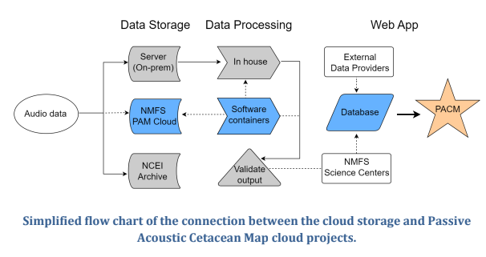

is_weekday = function(x){
weekdays = c('Thursday','Friday','Monday','Tuesday','Wednesday')
return(weekdays(x) %in% weekdays)
}
is_after_hours= function(x){
return(as.integer(format(x,"%H")) < 6 | as.integer(format(x,"%H")) > 18)
}
#cloud data upload. This assumes you are uploading bottom_mounted data , and just uploads the full content of each folder below the 'moorings' folder. Adapt the logic to your needs but note renaming / reorganizing is more complex.
my_fmc_bucket_name = 'afsc-1'
my_top_level_data_path = "//161.55.120.117/NMML_AcousticsData/Audio_Data/Waves"
moorings = dir(my_top_level_data_path) #gets each subfolder of top level data path.
#log the job
sink(paste("//akc0ss-n086/NMML_CAEP_Acoustics/Detector/pam_si/upload_log_",Sys.info()['nodename'],".csv",sep=""), append=TRUE, split=TRUE)
work = list(1:200,201:length(moorings)) #in my case we had 435 moorings.
names(work) = c("computer1-name","computer2-name") #needs to match Sys.info()['nodename'] for computers you are using
moorings = moorings[work[[Sys.info()['nodename']]]]
for(mooring in moorings){
#detect if it's a weekday during work hours, don't start a job.
while(is_weekday(Sys.time()) & !is_after_hours(Sys.time())){
cat(paste('waiting...',Sys.time(),"\n"))
Sys.sleep(600) #wait 10 minutes until trying again.
}
#gsutil needs to be installed on the system through Google Cloud SDK. If you can open up a command line and run 'gsutil help' and recieve a response, the below line will work.
string = paste("gsutil -m cp -r ",my_top_level_data_path,mooring," gs://",my_fmc_bucket_name,"/bottom_mounted/",mooring,sep="")
cat(paste("started",mooring,"at",Sys.time(),"\n"))
system(string,intern=TRUE)
cat(paste("ended",mooring,"at",Sys.time(),"\n"))
}NMFS PAM Google Cloud Project #1
Team Leads
Sofie Van Parijs (NEFSC), Dan Woodrich (AFSC)
Goal
Demonstrate a scalable and cost-effective cloud-based workflow to modernize NMFS PAM operations and support the protected species mission
Target outcome
Developing a National PAM Cloud operational repository for data processing and storage

Project steps
PAM GCP Technical System Documentation
Overview
Summary of key decisions, technical system set-up, and use expectations for using software applications in the PAM GCP. This document is an initial way to collaborate on developing the documentation and will be transitioned to the National PAM Network GitHub once folks have access.
The acoustics SI and project design philosophy:
The ggn-nmfs-pamdata-prod-1 (“pamdata”) GCP project is designed to encompass the requirements of the PAM SI, while best prioritizing the wants and needs of the end-users and use cases, and staying near best admin practices for NMFS OCIO GCP. The relevant objectives of the PAM acoustics SI include acoustic data storage across NMFS, and passive acoustic monitoring applications that generally feed from this data. The primary end-users of the system include data owners and users, and application owners, developers, and users.
Permissions structure:
A principle and role based structure was designed for project capabilities. By defining specific principle groups (project supervisor, application developer, etc) the project is resilient to changes in individual users. Roles are given to these principle groups- for example, the project supervisors principle group is given viewing roles for most of the resources in the project for their visibility.
For quick configuration and transparency during the dynamic early stages of the project, principle and role definitions are managed by a central “project admin” principle group via terraform. NMFS OCIO best practice recommends Terraform for more transparent project resource configuration and management, and this allows for simplicity and transparency.
Alternatives: In the future, we may wish to delegate assignment of users to principle groups in a way that better resembles the true acoustics SI responsible parties (ie, supervisors can assign the project admin(s), data authorities can designate their respective data admin(s), etc). In the short term, this may result in too much unpredictability to the dynamic project.
Below are some of the currently defined principles for the project:
| Principle group name | Definition and roles |
|---|---|
| Project admin | Highest GCP admin role, controls project terraform (all principle, role, resource definitions) |
| Project supervisors | Highest SI role, has visibility across project resources, tells project admin what to do |
| Data authority | Responsible party for a particular FMC data storage bucket |
| Data admin | Administrates the contents (write/delete) of a particular storage bucket |
| Application developer | Access to software development resources |
Resources:
The pamdata project is expected to house PAM data from across NMFS, application development resources, and various applications (<30) in various states of development. Sprawl is a serious threat, in particular since many end-users of the system (owners/authorities, supervisors, users) tend to understand the system through use of a web browser as opposed to filterable api calls. In other words, resource sprawl will lead to reduced understandability of the project across the PAM SI end users and is thus carefully considered.
Data resources:
Each FMC has a distinct storage bucket for their data. This allows for some flexibility in data naming and easier isolation of permissions between FMCs. Principle groups that are designated here are data authorities (the data owner or responsible party, usually the PI of an FMC acoustics group), and the data admins (the technical users responsible for maintaining the contents of the storage bucket).
The browser allows for easy viewing of the storage buckets such that non-technical users can easily interpret the current state of the data across the NMFS FMCs. However, the tool cannot distinguish the FMC buckets from application buckets, and in order to maintain easy interpretability applications will be encouraged to consolidate to fewer buckets as appropriate. Currently, three additional buckets outside of the FMC data buckets exist: the terraform state bucket, an application intermediate bucket, and an application output bucket.
Development resources
The following resources have been stood up for application development:
Hardened docker image/server:
Based on NMFS hardened linux container and preloaded with docker. I developed an imagining pipeline for this, meaning it will be easy to keep up to date and we can make as many copies of this as developers need them. Developing on this instead of locally will be a little closer to cloud and streamlines and simplifies some assumptions. Please make sure any developers working on containers understand this option exists and the advantages in doing development here (hardware flexibility, more similar to production, built in permissions w/o key management, etc).
Docker registry:
This is where container images will be placed (whether we build or import them), and it is a key backbone of a variety of GCP container orchestration services.
Application storage buckets:
There are two new storage buckets, pamdata-app-intermediates and pamdata-app-outputs. Some of the time applications will need their own specific tiering and lifecycle, but I wanted to start with just these two, especially for early development, given that they are visible along with the FMC data buckets and we tend to like to use the console as a browsing tool to keep track of these. Keeping it to two, and dividing permissions by prefix, will keep the bucket display from getting too muddied.
Created networks and subnets - one for application and development machines, which require ssh and NAT internet connectivity, and one for batch processing, which relies on only private google connectivity by default, but other connectivity can be added as a particular app might need.
Direct Acoustic Data Upload to Cloud
Result:
ASFC was able to upload 100TB of acoustic data to our GCP bucket over the internet connection in our science center (in Seattle) in a three week upload window with low operator effort, representing our whole primary acoustic data collection.
How:
Our research group committed two computers with normal user permissions in the AFSC data center to upload data from the AFSC LAN to our pamdata bucket. These two computers ran a simple script, which was written in R and wrapped calls to the GCP ‘gsutil’ tool. The script was very simple, about 50 lines. The script instructed the computers to only initiate uploads between the hours of 7pm and 6am on weekdays and constantly on weekends. The R sessions were logged so we could identify any early termination that might have resulted in partial or corrupted uploads. Additional process will be designed to check that the data was uploaded in full.
Impact:
AFSC IT would have been notified by the NMFS network team if the traffic were considered disruptive. They would have traced the traffic to the machines under my user name, and contacted me to ask questions. This not happening suggests that the traffic was a non-issue. Scheduling traffic within off-hours (nights and weekends) prevents throttling normal user traffic during working hours, and staying within these confines is respectful and normal practice for NMFS IT groups. We did not notify AFSC IT or the NMFS network team as we wanted to test the impact of this traffic empirically, but going forward, especially with multiple FMCs performing uploads concurrently, we advise approving the traffic with FMC & NMFS IT.
Contact:
Dan Woodrich daniel.woodrich@noaa.gov if you would like to explore a similar process for your FMC acoustic data.
R script:
Google Transfer Appliance Set Up Checklist

- Enable APIs - this has been completed that the console/project level and the checklist item can simply be marked as complete.
- Authorize Service Acounts: Email Dan Woodrich daniel.woodrich@noaa.gov the link to the checklist so he can complete that step on your behalf